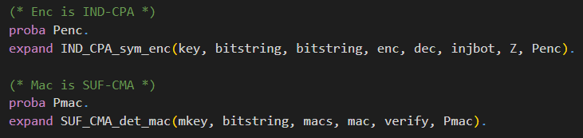

üìö First Proof
In this chapter we will have a look at a first proof using CryptoVerif. You will be guided to gather an understanding of how to work with CryptoVerif.
We will consider the Enc-then-Mac construction. Our goal is to show that Enc-then-Mac is IND-CPA secure, assuming the symmetric encryption is IND-CPA secure and the MAC is SUF-CMA secure.
Enc-then-Mac

The Enc-then-Mac construction works as follows.
- Encrypt the plaintext resulting in a ciphertext.
- Compute the Mac over this ciphertext.
- Concatenate the ciphertext and this Mac.
You can see a visualization of this construction on the right-hand side.
Input file
In this section we will build the input file for the proof together. CryptoVerif takes this file and tries to prove the queries we defined using the sequence of games technique.
ℹ️ Note that we will not strictly walk through every line of code from the top to the bottom. We will skip some lines for didactic reasons and explain them at the appropriate places.
Cryptographic assumptions
We start with the cryptographic assumptions we make for the cryptographic primitives used. In our case this is that the symmetric encryption is IND-CPA secure and the MAC is SUF-CMA secure.
CryptoVerif provides a library containing many standard cryptographic assumptions you can use (see manual , Chapter 6). But you can also create your own assumptions.
You can see the code snippets for telling CryptoVerif that enc is IND-CPA secure and mac is SUF-CMA secure in the following. 
Here the already in the library defined macros IND_CPA_sym_enc and SUF_CMA_det_mac are expanded. For a better understanding we will discuss the technical side with the example of the IND_CPA_sym_enc marco.
First, let us inspect the meaning of the parameters of this macro.
- type of keys
- type of plaintexts
- type of ciphertexts
- encryption function
- decryption function
- function to inject bottom symbol (decryption function needs to return bottom when decryption fails; bottom is not the same type as ciphertexts)
- function that returns for each bitstring a bitstring of the same length consisting only of zeroes
- probability of breaking the IND-CPA property
The functions enc, dec, injbot and Z are declared by the macro. It is important that they are not declared anywhere else. They can only be used after the macro has been expanded.
The types of keys, plaintexts, ciphertexts and the probability Penc must be declared before expanding the macro.
As you can see in the code snippet, the probability Penc is declared right before expanding the macro.
The types of plaintexts and ciphertexts are bitstring, a predefined type.
The type of keys is declared at the top of the input file, depicted in the following code snippet. There are also the type declarations for parameters for the macro SUF_CMA_det_mac.

The types are annotated with the lable [fixed] meaning that, for example, an encryption key is a bitstring of fixed length. Note that CryptoVerif does not need to know the specific length. Similar as it does not need to know the specific implementation of the symmetric encryption scheme or the MAC.
explain technical side: e.g. IND-CPA replaces message with Z(m1),Z(m2) (same bitstring)
explain how CryptoVerif tries to transformations (how it reacts to fails to proceed)
Definition Enc-then-Mac
letfun full_enc()
letfun requires implementation vs fun does not

Initial game to prove (including oracles)
QencLR (oracle)
talk about replication (foreach i <= qEnc do)
param qEnc. definded at top of file
if branches cannot be merged


OStart (first game)
talk about queries (query secret b.)
talk about run


Concat Function
fun concat

Execute
The input file is now ready and we can execute CryptoVerif to let it try proof our query.
You can find the input file enc-then-MAC-IND-CPA.ocv
here.
When in the same directory as the executable cryptoverif you can run CryptoVerif on our created input file using the following command.
./cryptoverif ./path/enc-then-MAC-IND-CPA.ocv
explain output of CryptoVerif
emphasize IND-CPA game hop as preparation for the first challenge